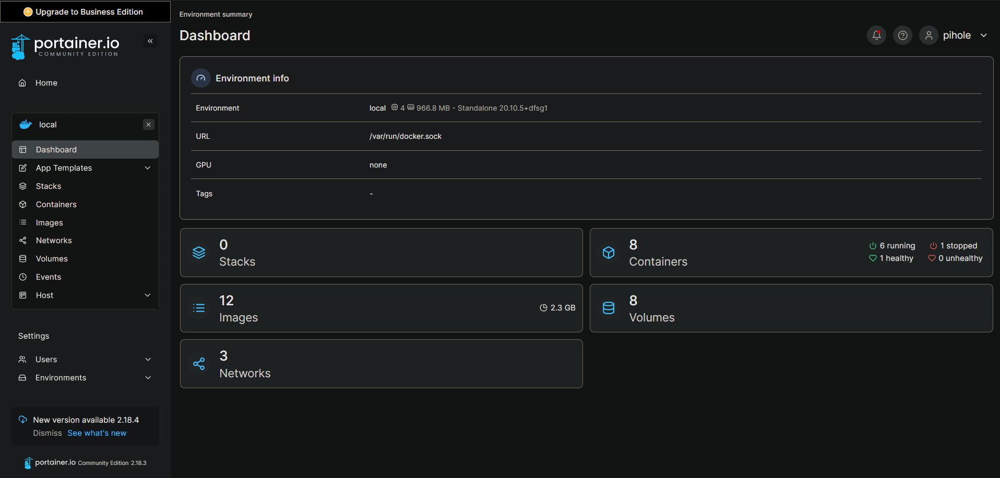
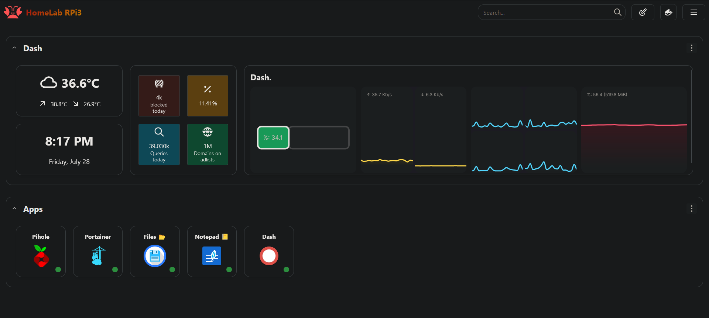
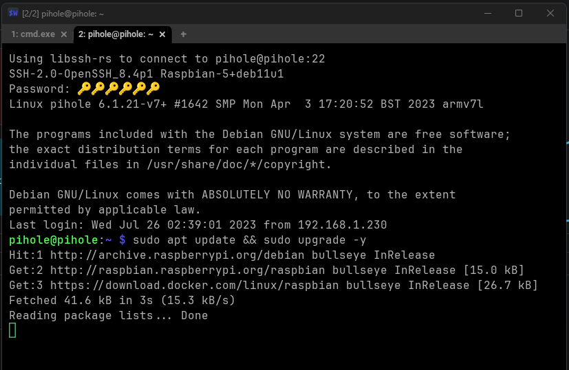

Running Services
Pihole
Pi-hole is a network-wide ad blocker that runs on the headless Linux Raspbian OS on the Raspberry Pi 3B+. It acts as a DNS sinkhole, intercepting and filtering out ad requests from all devices on the network, thus preventing ads from being displayed across devices and enhancing privacy while browsing.

Portainer

Portainer is a user-friendly and web-based management tool that allows you to easily deploy, manage, and monitor Docker containers on the Raspberry Pi. By utilizing Portainer, you can effortlessly run and maintain various applications in isolated containers, such as:
1. File Browser: File Browser is a file manager designed for the web. Running it as a Docker container through Portainer enables user to access, manage, and share your files remotely, creating a convenient way to interact with your Raspberry Pi's storage over the network.
2. Tsks.md (Tasks Markdown): Tsks.md is a custom application or script that uses Markdown formatting for task management. Deploying it as a Docker container allows you to keep track of tasks and to-do lists in a structured and organized manner, accessible from any device on home network.
3. Dash: Dash is a web-based dashboard application that can be deployed through Portainer as a Docker container. Dash enables you to create customizable dashboards, presenting various data, statistics, and information in a visually appealing and easy-to-read format.

By combining Pi-hole, Portainer, and various Docker containers like File Browser, Tsks.md, Dash, and Homarr on your Raspberry Pi 3B+, you create a powerful and versatile home server setup that enhances network security, simplifies application management, and provides convenient access to essential services and data.
SSH (Secure Shell) on a Raspberry Pi is a network protocol that allows secure remote access to the Raspberry Pi's command-line interface (CLI) over a network. It provides a way to connect to and control the Raspberry Pi remotely from another computer or device.

When SSH is enabled on a Raspberry Pi, you can use a terminal or command prompt on your computer to connect to the Raspberry Pi's command-line interface. This enables you to execute commands, manage files, and perform various tasks on the Raspberry Pi as if you were directly using its keyboard and monitor.
SSH ensures secure communication by encrypting data sent between the client (your computer) and the server (the Raspberry Pi), protecting sensitive information from potential eavesdropping or unauthorized access.
SSH is particularly useful for headless setups, where the Raspberry Pi is running without a monitor, keyboard, or mouse. With SSH, you can access and control the Raspberry Pi from any device on the same network, making it easier to manage and administer the Raspberry Pi remotely.